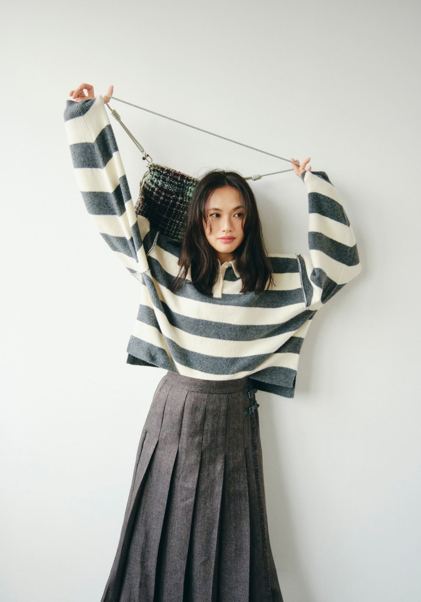
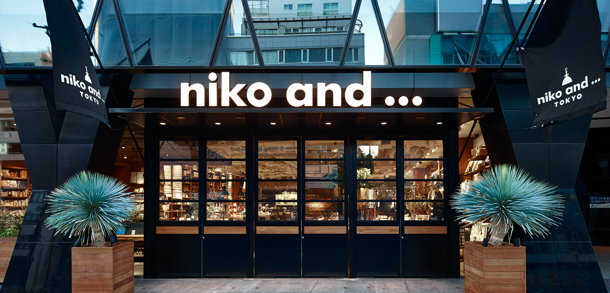

niko and ... 的吸引力，来自服装与日常用品之间的联系：宽松针织衫可以搭配一只带有复古图案的包，同样的趣味又延伸到杯子、拖鞋和房间里的小物件。品牌呈现的形象偏向随性、亲近，带一点怀旧，也愿意容纳不那么严肃的个人爱好。
理解这种气质，可以看三个具体问题：服装怎样做到宽松而有造型，普通生活用品怎样变得值得注意，以及门店怎样把这些东西组织在一起。
宽松的衣服，怎样穿出讲究

图：niko and ... × NAVYS，2026 秋冬造型。图片来源：品牌官方专题。
这套造型很适合观察 niko and ... 的服装表达。
上衣采用灰白宽条纹，衣身和袖子都有明显余量，肩部没有形成挺括的支撑。下装是一条带褶裥的灰色长裙，腰侧保留搭扣，纵向褶线向下展开。针织衫柔软、横向舒展，裙子则提供较清楚的垂直方向。
宽松感因此有了不同的层次。上半身像一件熟悉、方便活动的日常衣服，下半身保留传统裙装的秩序。两者并置，让造型既舒适，又没有完全散开。
这里的颜色也值得注意。灰白条纹对比清楚，但没有鲜艳色彩带来的强烈刺激；灰色裙子继续承接这组颜色。包袋的纹理更复杂，于是成为局部变化。整套衣服的重点，落在条纹、褶线和织物表面之间。
这种讲究主要体现在熟悉单品的组合上。 针织衫、长裙、包袋都容易理解，但它们的宽窄、方向和纹理经过安排，便形成了具体的风格。
人物动作也参与其中。她将包带举过头顶，双臂抬起，让宽袖的形状充分展开。这个带有玩耍意味的动作，使衣服显得可以活动、可以被使用，也降低了正式摆拍的距离感。这是画面的呈现效果，不能据此推断人物真实的性格。
官方将这一专题称为“BOYS CASUAL”，借用带有少年感的休闲单品，讨论成年人的穿着方式。这里的“少年感”，更适合理解为宽松、轻快和一点玩心，无须把它等同于显得年幼。官方造型专题
趣味为什么经常来自熟悉的东西
niko and ... 的趣味，有一部分建立在日常已经认识的符号上。
2026 年 10 月，品牌推出“HOME PARTY EVERYDAY！”主题，将《小鬼当家》、PEZ、可口可乐等电影或商业形象放进卫衣系列。它们被放在居家、朋友相聚与庆祝的语境中，而不是仅按图案分别陈列。官方企划介绍
这类图案与抽象花纹的区别，在于它们可能唤起具体联想。有人想到童年零食，有人想到电影，有人只是喜欢标志的形状和配色。穿着者能够选择自己愿意保留的那部分联系。
因此，一件卫衣除了颜色和版型，还多了一层容易交流的内容。别人可能认出图案，也可能由此开始谈论一部电影。这种服装表达带有社交上的亲近感：它给人留下了可以理解、可以回应的线索。
但熟悉感有条件。同一个图案，对认识它的人可能有回忆，对另一个人可能只是一幅印花。品牌提供的是联想的入口，具体感受仍取决于个人经验。
它的杂货也采用类似方法。以 Casper 联名为例，官方商品范围包含卫衣、马克杯、毯子、室内拖鞋、灯具和时钟。同一个形象从穿着延伸到居家用品，形成了一组可以共同出现的物件。官方联名商品目录
这让“喜欢一个形象”有了多种参与方式。可以把它穿在身上，也可以只留在桌面或房间的一角。不同品类承担不同程度的表达，无须整套购买，某一个小物件就能进入原有生活。
门店怎样把“有很多东西”变成“值得逛”

图：niko and ... TOKYO。图片来源：官方门店介绍。
东京店的这张外观照片，呈现出两种不同的视觉分量。
外侧是粗大的黑色结构、旗帜和醒目的白色标识，入口的位置很明确。透过玻璃，又能看见木色陈列、货架和较密集的商品。门前的大型植物与木箱，为坚硬的黑色框架加入了自然形态和材质变化。
外部建立辨识度，内部则提供继续观看的内容。视线可以从招牌移向橱窗，再落到里面的小物件。商品的丰富程度本身，成为吸引人靠近的原因之一。
不过，品类多并不会自动产生趣味。衣服、餐具、家具各摆一片，仍可能只是一家功能齐全的商店。它们需要一个共同话题，顾客才容易理解彼此的关系。
niko and ... 官方将商品与店铺的组织比作杂志编辑：从不同生活领域选择内容，形成可以不断翻阅的主题。品牌理念
这种“编辑”在大型店专题里表现得很直接。官方曾围绕方便面、饺子与音乐等内容组织企划。日常食物成为主题后，能够把穿着、器物、饮食与活动联系起来，让原本分散的品类有了共同出现的理由。大型店专题记录
例如，假设一组商品围绕“与朋友在家吃饭”展开，衣服可以对应聚会时的穿着，餐具对应食物，音乐对应相处的氛围。人们理解它们时，想到的是一次活动，而不仅是几个商品分类。
这也是生活方式品牌容易产生吸引力的地方：它帮助人想象物品进入生活之后的样子。
与 ZARA、三福相比，它的重心在哪里
沿着此前两篇文章所分析的材料来看，三者可以作一个有限的比较。
ZARA 的一些品牌画面，重点在人物形象的完整度。肩腰比例、服装线条、发型、配饰和姿态共同作用，让大众成衣形成鲜明的时装感。观看重点经常集中在“这一身怎样成立”。
三福的品牌表达更接近兴趣市集。服装、美妆、玩具与生活用品提供多个入口，让不同兴趣的人在逛的过程中找到内容。丰富、热闹和发现新东西，是此前文章关注的特点。
niko and ... 与两者都有重叠，但本文这些案例呈现出另一种重心：让穿着与生活里的小爱好相互连接。
一件针织衫可以保留传统服装的线索，又通过宽松比例穿得随意；一只杯子可以继续承接衣服上的图案趣味；一次饮食主题，又能把不同商品放进相同的生活情境。
这里的区别不是固定标签。同一品牌内部也有不同系列与表达。比较的作用，是看清它们如何组织材料，而不是为三个品牌分别规定一种性格。
它所传达的生活态度
从这些案例里，可以读出一种对日常细节的重视。
衣服可以方便活动，也可以有值得看的比例；生活用品需要实际用途，也可以保留幽默、回忆和个人偏好。好看的东西与好用的东西，在同一套生活里寻找联系。
其中有一种亲近感：改变生活形象，不一定从一整套强烈风格开始，也可以从一件条纹针织衫、一只图案杯子，或某个自己喜欢的小物件开始。
同时，这仍然是一种经过策划的商业表达。主题陈列会让原本没有购买计划的人产生兴趣；联名与季节更新也会持续制造新鲜感。能否在日常继续穿、继续用，才决定这份趣味能留下多久。
niko and ... 值得研究的地方，正在于这种组织能力：它从熟悉的衣服、食物和物件中选择线索，再通过搭配与陈列，让人看见它们之间原本不那么明显的联系。品牌气质由这些具体选择逐渐形成——随意之中有安排，实用之中留有玩心。
本文依据日本官方品牌资料、门店照片及 2026 年秋冬企划分析；不同地区、门店和系列的实际呈现会有差异。
留言
由 Disqus 提供。